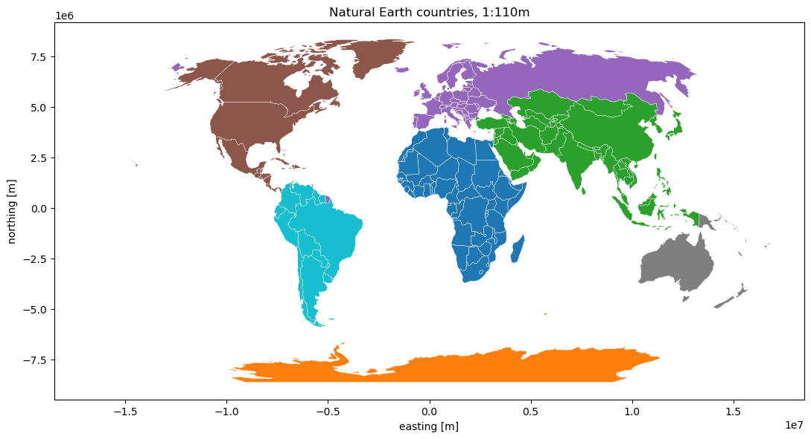
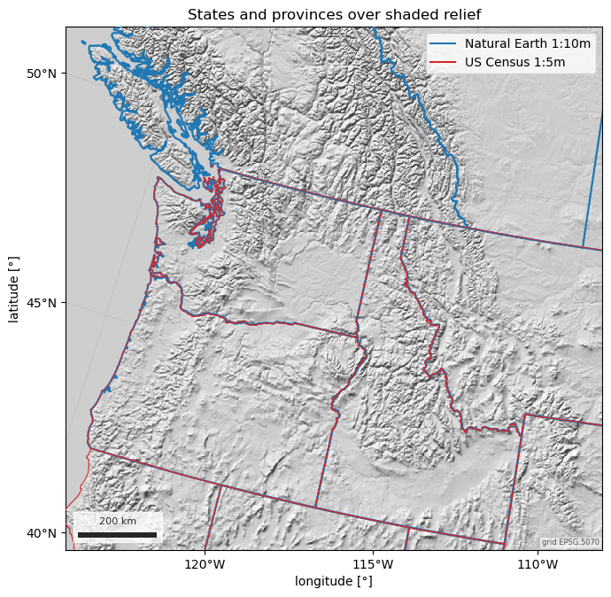
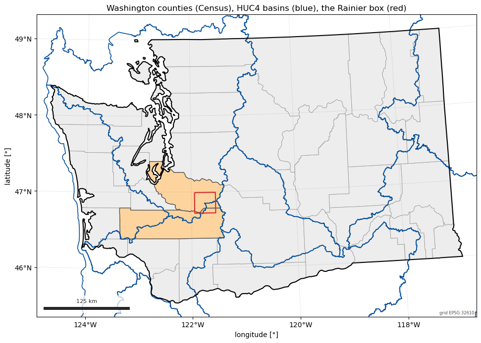
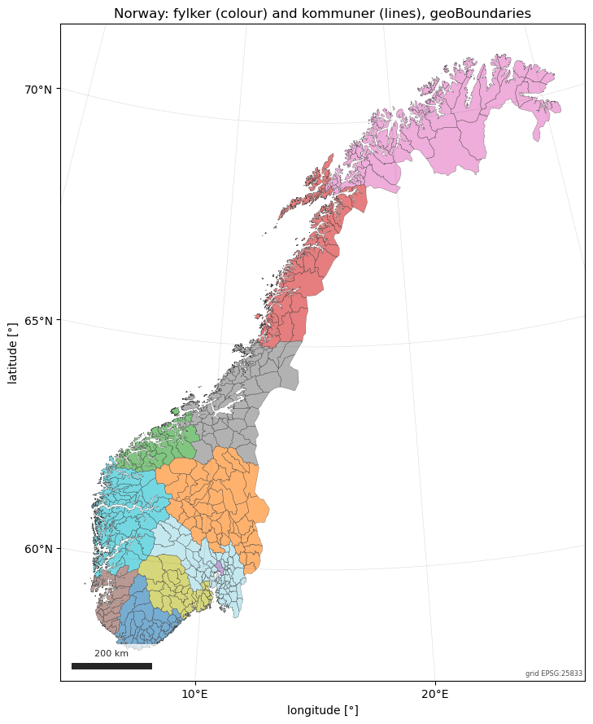

Note
Go to the end to download the full example code.
Countries, states, counties and admin units#
esd.boundaries.admin answers “which country, state, county or district is
this?” with four products:
countries()— Natural Earth at 1:110m, 1:50m or 1:10m, or geoBoundaries ADM0;states()— states and provinces worldwide from Natural Earth, US states from the Census Bureau (picked automatically for a US AOI), or geoBoundaries ADM1;counties()— US counties from the Census Bureau;admin()— any level (ADM0-ADM5) of any country from geoBoundaries.
Each returns a GeoDataFrame in EPSG:4326 whose first columns are name,
iso3 and admin_level, whatever the source, and each archive is fetched
once into the easysnowdata cache. None of them needs an account.
The figures show the world, the Pacific Northwest’s states and provinces over the Natural Earth hillshade, Washington’s counties with the HUC4 basins a state polygon selects when it is used as an AOI, and Norway’s counties and municipalities from geoBoundaries.
import matplotlib.pyplot as plt
import easysnowdata as esd
rainier = (-121.94, 46.72, -121.54, 46.99) # Mount Rainier, WA
Where each product comes from, and what the route asks for.
for product_id in ("countries", "states-provinces", "us-counties", "admin-boundaries"):
for src in esd.catalog.get(product_id).sources:
print(
f"{product_id:18} {src.id:14} {src.title:34} {', '.join(src.requires) or 'no account'}"
)
countries natural-earth Natural Earth no account
countries geoboundaries geoBoundaries (gbOpen) no account
states-provinces natural-earth Natural Earth no account
states-provinces us-census US Census cartographic boundaries no account
states-provinces geoboundaries geoBoundaries (gbOpen) no account
us-counties us-census US Census cartographic boundaries no account
admin-boundaries geoboundaries geoBoundaries (gbOpen) no account
The world at 1:110m, Natural Earth’s default for a map this size, coloured by continent and drawn in Robinson.
world_gdf = esd.boundaries.admin.countries()
print(f"{len(world_gdf)} countries; columns start with {list(world_gdf.columns[:3])}")
print(world_gdf.loc[world_gdf["iso3"].isin(["NOR", "FRA"]), ["name", "iso3", "ISO_A3"]])
robinson = "ESRI:54030"
ax = world_gdf.to_crs(robinson).plot(
column="CONTINENT", cmap="tab10", edgecolor="white", linewidth=0.3, figsize=(11, 6)
)
esd.plotting.finish_map(ax, robinson, scalebar=False, graticule=False)
ax.set_title("Natural Earth countries, 1:110m")
ax.figure.tight_layout()

0%| | 0.00/215k [00:00<?, ?B/s]
0%| | 0.00/215k [00:00<?, ?B/s]
100%|███████████████████████████████████████| 215k/215k [00:00<00:00, 1.56GB/s]
177 countries; columns start with ['name', 'iso3', 'admin_level']
name iso3 ISO_A3
21 Norway NOR -99
43 France FRA -99
The ISO_A3 column above is -99 for Norway and France, a Natural
Earth quirk; iso3 comes from ADM0_A3 and is always set.
States and provinces across the Pacific Northwest. The AOI straddles the
border, so states() reads Natural Earth’s first-level units for both
countries; restricted to the US, it switches to the Census Bureau’s
cartographic boundaries, which are the authoritative US outlines. The two
are drawn over the Natural Earth hillshade, on one Albers grid.
pnw = (-125.0, 42.0, -110.0, 52.0)
grid = esd.parse_aoi(pnw).to_geobox(crs="EPSG:5070", resolution=2000)
ne_states_gdf = esd.boundaries.admin.states(pnw)
census_states_gdf = esd.boundaries.admin.states(pnw, country="USA")
print(ne_states_gdf[["name", "iso3", "admin_level"]].to_string(index=False))
print(census_states_gdf.attrs["source"], census_states_gdf.attrs["resolution"])
# The Albers grid's corners reach beyond the lon/lat box, so the hillshade is
# read with a margin that covers them.
hillshade_da = esd.terrain.hillshade.load(
(-130.0, 38.0, -104.0, 56.0), style="shaded-relief"
)
ax = esd.plotting.map(
hillshade_da.odc.reproject(grid, resampling="bilinear"),
cmap="gray",
vmin=0,
vmax=255,
colorbar=False,
title="States and provinces over shaded relief",
)
esd.plotting.add_outline(ax, ne_states_gdf, edgecolor="#1f77b4", linewidth=1.6)
esd.plotting.add_outline(ax, census_states_gdf, edgecolor="#d62728", linewidth=0.8)
ax.plot([], [], color="#1f77b4", label="Natural Earth 1:10m")
ax.plot([], [], color="#d62728", label="US Census 1:5m")
ax.legend(loc="upper right")
ax.figure.tight_layout()

0%| | 0.00/14.9M [00:00<?, ?B/s]
54%|████████████████████▏ | 8.12M/14.9M [00:00<00:00, 81.2MB/s]
0%| | 0.00/14.9M [00:00<?, ?B/s]
100%|█████████████████████████████████████| 14.9M/14.9M [00:00<00:00, 68.9GB/s]
0%| | 0.00/1.12M [00:00<?, ?B/s]
0%| | 0.00/1.12M [00:00<?, ?B/s]
100%|█████████████████████████████████████| 1.12M/1.12M [00:00<00:00, 5.14GB/s]
name iso3 admin_level
Washington USA 1
British Columbia CAN 1
Idaho USA 1
Montana USA 1
Alberta CAN 1
Oregon USA 1
Utah USA 1
Wyoming USA 1
Nevada USA 1
us-census 1:5m
Washington’s 39 counties, with the two that contain Rainier picked out by AOI. A boundary is itself an AOI: the Washington polygon selects the HUC4 subregions it touches, from the USGS WBD service.
wa_counties_gdf = esd.boundaries.admin.counties(state="WA")
rainier_counties_gdf = esd.boundaries.admin.counties(rainier)
washington_gdf = esd.boundaries.admin.states(name="Washington", country="USA")
huc4_gdf = esd.hydro.basins.huc(washington_gdf, level=4)
print(rainier_counties_gdf[["name", "STUSPS", "GEOID"]].to_string(index=False))
print(huc4_gdf[["huc4", "name"]].to_string(index=False))
utm = esd.parse_aoi(washington_gdf).utm_crs
fig, ax = plt.subplots(figsize=(10, 7))
wa_counties_gdf.to_crs(utm).plot(ax=ax, color="0.93", edgecolor="0.55", linewidth=0.5)
rainier_counties_gdf.to_crs(utm).plot(ax=ax, color="#fdd49e", edgecolor="0.3")
huc4_gdf.to_crs(utm).boundary.plot(ax=ax, color="#08519c", linewidth=1.2)
washington_gdf.to_crs(utm).boundary.plot(ax=ax, color="black", linewidth=1.5)
esd.parse_aoi(rainier).to_crs(utm).boundary.plot(ax=ax, color="#d62728", linewidth=1.5)
b = washington_gdf.to_crs(utm).total_bounds
ax.set_xlim(b[0] - 20_000, b[2] + 20_000)
ax.set_ylim(b[1] - 20_000, b[3] + 20_000)
esd.plotting.finish_map(ax, utm)
ax.set_title("Washington counties (Census), HUC4 basins (blue), the Rainier box (red)")
fig.tight_layout()

0%| | 0.00/2.98M [00:00<?, ?B/s]
23%|████████▊ | 689k/2.98M [00:00<00:00, 6.81MB/s]
80%|█████████████████████████████▋ | 2.39M/2.98M [00:00<00:00, 12.7MB/s]
0%| | 0.00/2.98M [00:00<?, ?B/s]
100%|█████████████████████████████████████| 2.98M/2.98M [00:00<00:00, 18.0GB/s]
name STUSPS GEOID
Lewis WA 53041
Pierce WA 53053
huc4 name
1702 Upper Columbia
1711 Puget Sound
1703 Yakima
1706 Lower Snake
1710 Oregon-Washington Coastal
1701 Kootenai-Pend Oreille-Spokane
1707 Middle Columbia
1708 Lower Columbia
1709 Willamette
Any level of any country through geoBoundaries. Norway’s first level is its
counties (fylker; the release holds the 11 of 2020-2023, before the 2024
split back to 15) and its second its municipalities (kommuner);
simplified=True reads geoBoundaries’ lighter geometries. Every unit
carries the licence of the national source it came from.
fylker_gdf = esd.boundaries.admin.admin(country="NOR", level=1, simplified=True)
kommuner_gdf = esd.boundaries.admin.admin(country="NOR", level=2, simplified=True)
print(f"{len(fylker_gdf)} fylker, {len(kommuner_gdf)} kommuner")
print(kommuner_gdf["boundaryLicense"].unique())
norway_utm = "EPSG:25833"
ax = fylker_gdf.to_crs(norway_utm).plot(
column="name", cmap="tab20", alpha=0.6, edgecolor="none", figsize=(8, 9)
)
kommuner_gdf.to_crs(norway_utm).boundary.plot(ax=ax, color="0.25", linewidth=0.2)
esd.plotting.finish_map(ax, norway_utm)
ax.set_title("Norway: fylker (colour) and kommuner (lines), geoBoundaries")
ax.figure.tight_layout()

0%| | 0.00/3.22M [00:00<?, ?B/s]
25%|█████████▌ | 808k/3.22M [00:00<00:00, 8.07MB/s]
0%| | 0.00/3.22M [00:00<?, ?B/s]
100%|█████████████████████████████████████| 3.22M/3.22M [00:00<00:00, 15.1GB/s]
0%| | 0.00/4.72M [00:00<?, ?B/s]
2%|▊ | 94.2k/4.72M [00:00<00:05, 901kB/s]
8%|███▏ | 395k/4.72M [00:00<00:02, 2.12MB/s]
30%|███████████▏ | 1.43M/4.72M [00:00<00:00, 5.78MB/s]
0%| | 0.00/4.72M [00:00<?, ?B/s]
100%|█████████████████████████████████████| 4.72M/4.72M [00:00<00:00, 22.9GB/s]
11 fylker, 431 kommuner
<ArrowStringArray>
['Creative Commons Attribution 4.0 International (CC BY 4.0)']
Length: 1, dtype: str
Total running time of the script: (0 minutes 11.252 seconds)